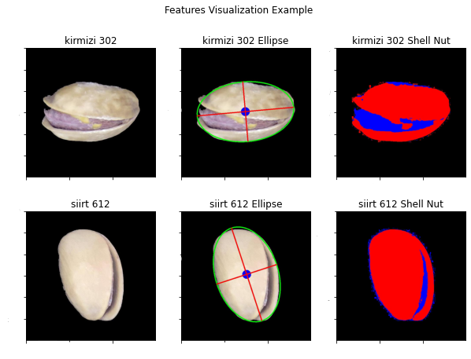
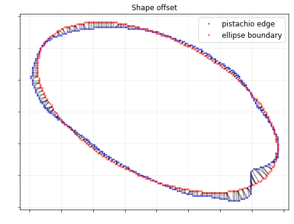
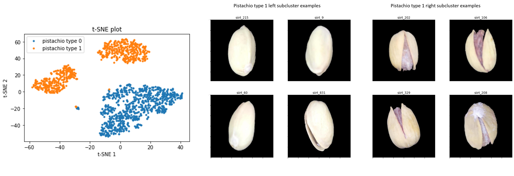
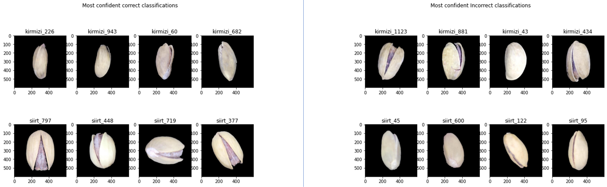

Image classification: Pistachios
This is a group project I worked on for the Master of Information and Data Science (MIDS) - Computer Vision course at UC Berkeley.
Teammates: Blake Bormes, Albert (Yu) Jiang.
Links: Report Notebook, Git Repo
Skills Demonstrated
- Proficiency in handling image data, computer vision techniques, and numpy array manipulation for precise feature extraction.
- Conducting comprehensive exploratory data analysis (EDA) to extract valuable insights.
- Understanding of dimensionality reduction techniques.
- Interpretation of model output and conducting thorough error analysis.
- Collaborative work on report notebooks, generating well-commented and comprehensible code.
Technologies: NumPy, Sklearn, OpenCV, Tensorflow
Overwiew
This project centered on the classification of pistachio images using a range of computer vision techniques using OpenCV. Our primary focus was on effectively managing image data by manipulating numpy arrays, encompassing tasks such as exploratory data analysis, feature extraction, and machine learning model development. Additionally, we harnessed dimensionality reduction methods to extract critical features and gain deeper insights from the dataset. Furthermore, we performed detailed error examination to interpret model outputs, resulting in a robust classification model with a 99.1% accuracy rate. We utilized logistic regression, support vector machine (SVM), and convolutional neural network (CNN) models in this project.
Key Features
- Feature extraction 1: A key feature extraction step included fitting an ellipse to the pistachio's edge, allowing us to capture essential attributes related to its size and shape. Additionally, we employed a K-means clustering model to analyze image colors, effectively identifying and distinguishing the pistachio's shell, nut, and edges. 
- Feature extraction 2: To measure the irregularity of the pistachio's edge, we compute the distance of each edge point from the fitted ellipse. The final feature is the sum of all the distances for each pistachio scaled by the perimeter of the ellipse. 
- t-SNE Subclusters: The t-SNE visualization revealed a distinct separation into two subclusters within pistachio type 1. Upon closer examination, we identified that this separation resulted from certain pistachios having their nut obscured from the camera's view. Consequently, we segregated pistachios based on nut visibility. 
- Model Output Analysis: We conducted an in-depth analysis of the model's predictions, focusing on both highly confident and uncertain classifications. This investigation revealed that pistachio size and the shell color's saturation significantly influenced the model's confidence in correct classifications. 